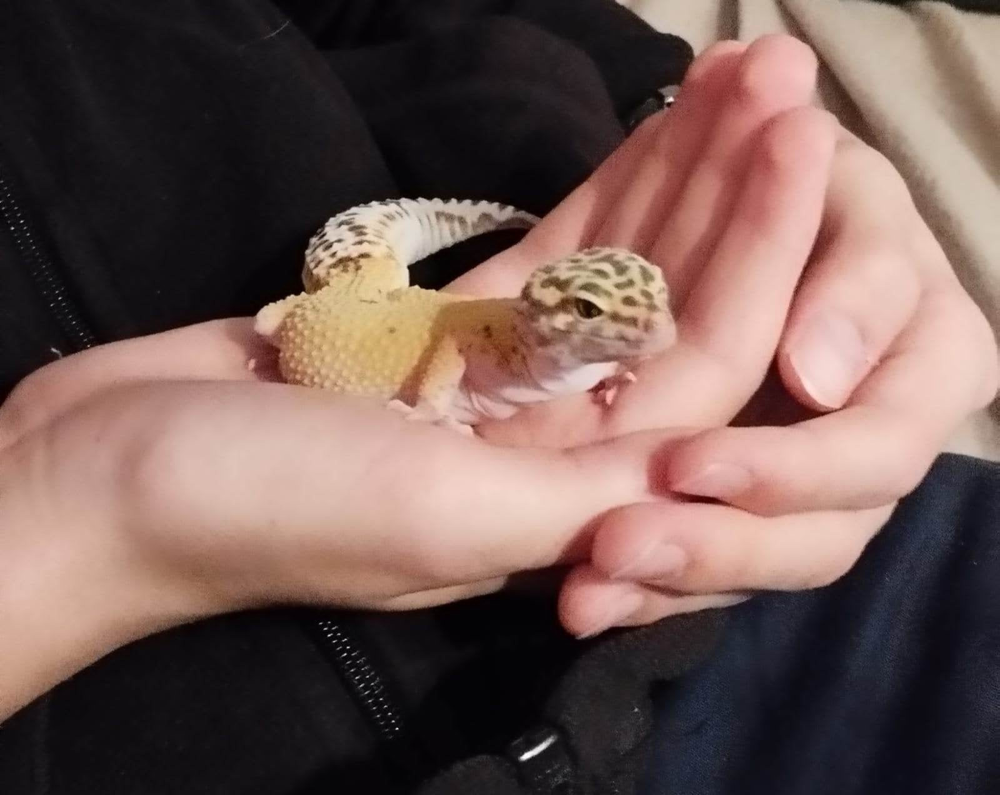
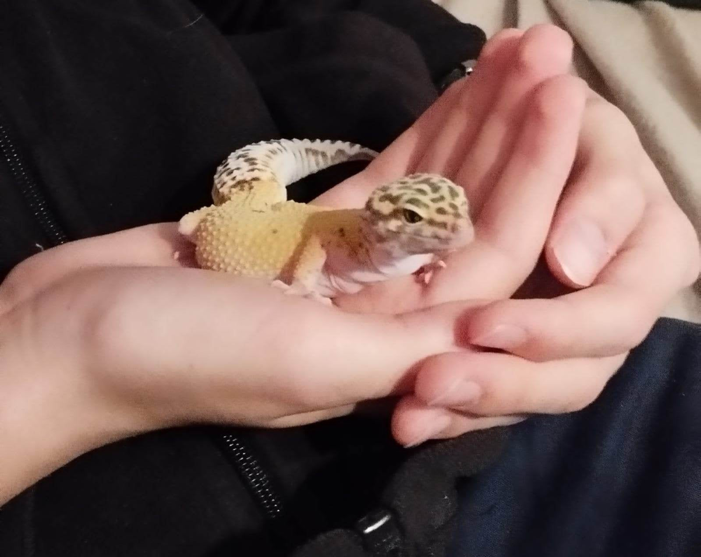

Moim czwartym zainteresowaniem są zwierzęta.
Zawsze zachwycam się pięknem przyrody i uwielbiam oglądać różnorodne zwierzęta. Sam mam w domu mały zwierzyniec: psa Herosa, kotkę Rudzie i gekona lamparciego Belle.
Zawsze zachwycam się pięknem przyrody i uwielbiam oglądać różnorodne zwierzęta. Sam mam w domu mały zwierzyniec: psa Herosa, kotkę Rudzie i gekona lamparciego Belle.
